ggthemes Package
Overview
Some extra geoms, scales, and themes for ggplot, including:
Themes
-
theme_base: a theme resembling the default base graphics in R. See alsotheme_par. -
theme_calc: a theme based on LibreOffice Calc. -
theme_economist: a theme based on the plots in the The Economist magazine. -
theme_excel: a theme replicating the classic ugly gray charts in Excel -
theme_few: theme from Stephen Few’s “Practical Rules for Using Color in Charts”. -
theme_fivethirtyeight: a theme based on the plots at fivethirtyeight.com. -
theme_gdocs: a theme based on Google Docs. -
theme_hc: a theme based on Highcharts JS. -
theme_par: a theme that uses the current values of the base graphics parameters inpar. -
theme_pander: a theme to use with the pander package. -
theme_solarized: a theme using the solarized color palette. -
theme_stata: themes based on Stata graph schemes. -
theme_tufte: a minimal ink theme based on Tufte’s The Visual Display of Quantitative Information. -
theme_wsj: a theme based on the plots in the The Wall Street Journal.
Scales
-
scale_colour_calc,scale_shape_calc: color and shape palettes from LibreOffice Calc. -
scale_colour_colorblind: Colorblind safe palette from http://jfly.iam.u-tokyo.ac.jp/color/. -
scale_colour_economist: colors used in plots in plots in The Economist. -
scale_colour_excel: colors from new and old Excel. -
scale_colour_few: color palettes from Stephen Few’s “Practical Rules for Using Color in Charts”. -
scale_colour_gdocs: color palette from Google Docs. -
scale_colour_hc: a theme based on Highcharts JS. -
scale_colour_solarized: Solarized colors -
scale_colour_stata,scale_shapes_stata,scale_linetype_stata: color, shape, and linetype palettes from Stata graph schemes. -
scale_colour_tableau,scale_shape_tableau: color and shape palettes from Tableau. -
scale_colour_pander,scale_fill_pander: scales to use with the pander package. -
scale_colour_ptol,scale_fill_ptol: color palettes from Paul Tol’s Colour Schemes -
scale_shape_cleveland,scale_shape_tremmel,scale_shape_circlefill: shape scales from classic works in visual perception: Cleveland, Tremmel (1995), and Lewandowsky and Spence (1989).
Most of these scales also have associates palettes, as used in the scales package.
Examples
library("ggplot2")
library("ggthemes")
library("scales")
p <- ggplot(mtcars, aes(x = wt, y = mpg)) +
geom_point() +
ggtitle("Cars")
p2 <- ggplot(mtcars, aes(x = wt, y = mpg, colour = factor(gear))) +
geom_point() +
ggtitle("Cars")
p3 <- p2 + facet_wrap(~ am)Tufte theme and geoms
Minimal theme and geoms based on plots in The Visual Display of Quantitative Information.
p + geom_rangeframe() +
theme_tufte() +
scale_x_continuous(breaks = extended_range_breaks()(mtcars$wt)) +
scale_y_continuous(breaks = extended_range_breaks()(mtcars$mpg))
The function geom_tufteboxplot creates several variants of Tufte’s minimal-ink boxplots. For a boxplot with a point indicating the median, a gap indicating the interquartile range, and lines for whiskers:
p4 <- ggplot(mtcars, aes(factor(cyl), mpg))
p4 + theme_tufte(ticks=FALSE) + geom_tufteboxplot()
For a boxplot with an offset line indicating the interquartile range and a gap indicating the median:
p4 + theme_tufte(ticks=FALSE) +
geom_tufteboxplot(median.type = "line")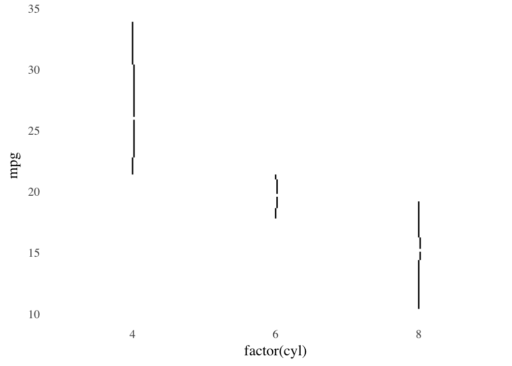
For a boxplot with an line indicating the interquartile range, a gap indicating the median, and points indicating the minimum and maximum:
p4 + theme_tufte(ticks=FALSE) +
geom_tufteboxplot(median.type = "line", whisker.type = 'point', hoffset = 0)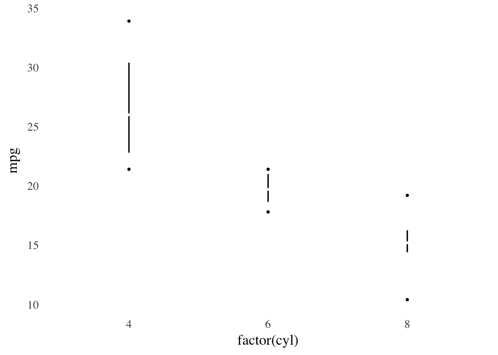
For a boxplot with a wide line indicating the interquartile range, a gap indicating the median, and lines indicating the minimum and maximum
p4 + theme_tufte(ticks=FALSE) +
geom_tufteboxplot(median.type = "line", whisker.type = 'line', hoffset = 0, width = 3)## Warning: position_dodge requires non-overlapping x intervals
Economist theme
A theme that approximates the style of plots in The Economist magazine.
p2 + theme_economist() + scale_colour_economist() +
scale_y_continuous(position = "right")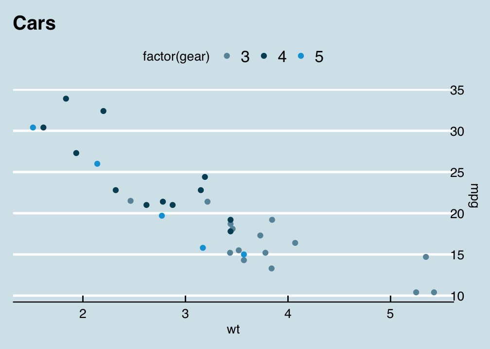
Solarized theme
A theme and color and fill scales based on the Solarized palette.
The light theme.
p2 + theme_solarized() +
scale_colour_solarized("blue")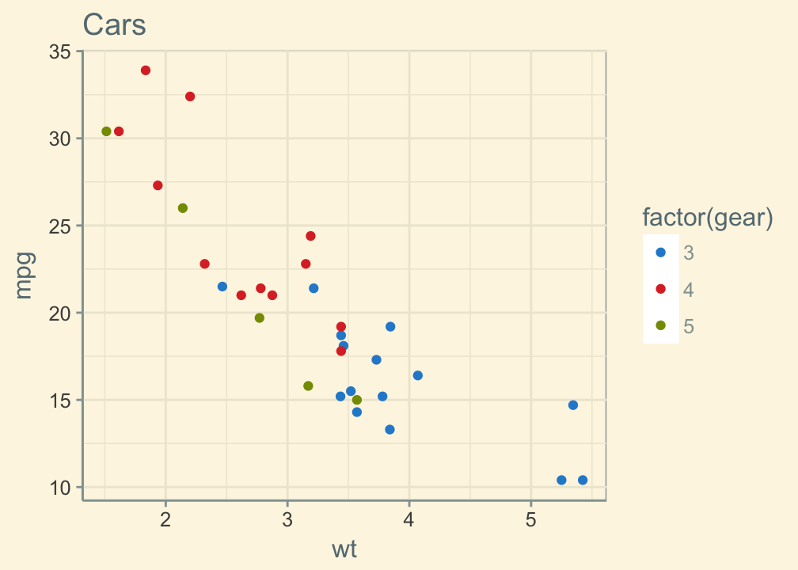
The dark theme.
p2 + theme_solarized(light = FALSE) +
scale_colour_solarized("red")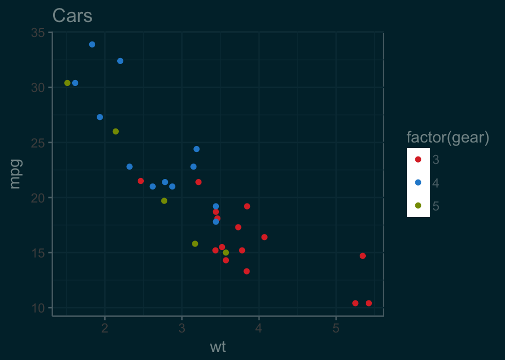
An alternative theme.
p2 + theme_solarized_2(light = FALSE) +
scale_colour_solarized("blue")
Stata theme
Themes and scales (color, fill, linetype, shapes) based on the graph schemes in Stata.
p2 + theme_stata() + scale_colour_stata()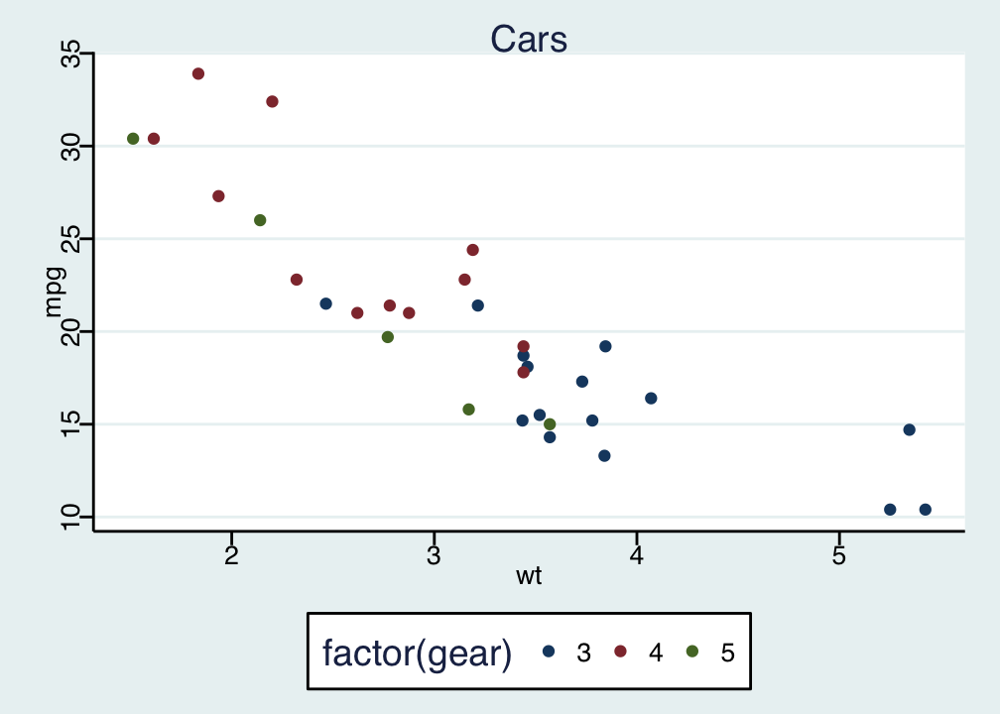
Excel 2003 theme
For that classic ugly look and feel. For ironic purposes only. 3D bars and pies not included. Please never use this theme.
p2 + theme_excel() + scale_colour_excel()
ggplot(diamonds, aes(x = clarity, fill = cut)) +
geom_bar() +
scale_fill_excel() +
theme_excel()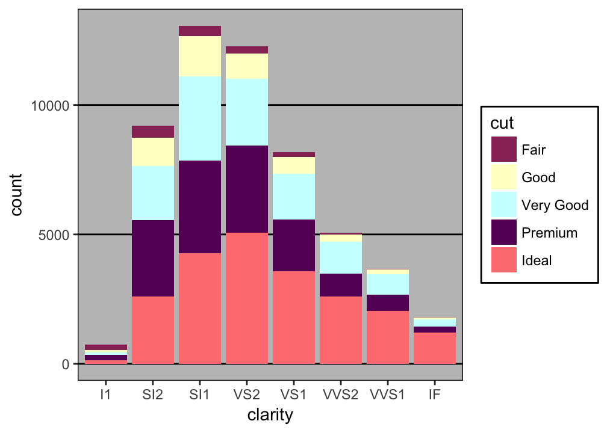
Inverse Gray Theme
Inverse of theme_gray, i.e. white plot area and gray background.
p2 + theme_igray()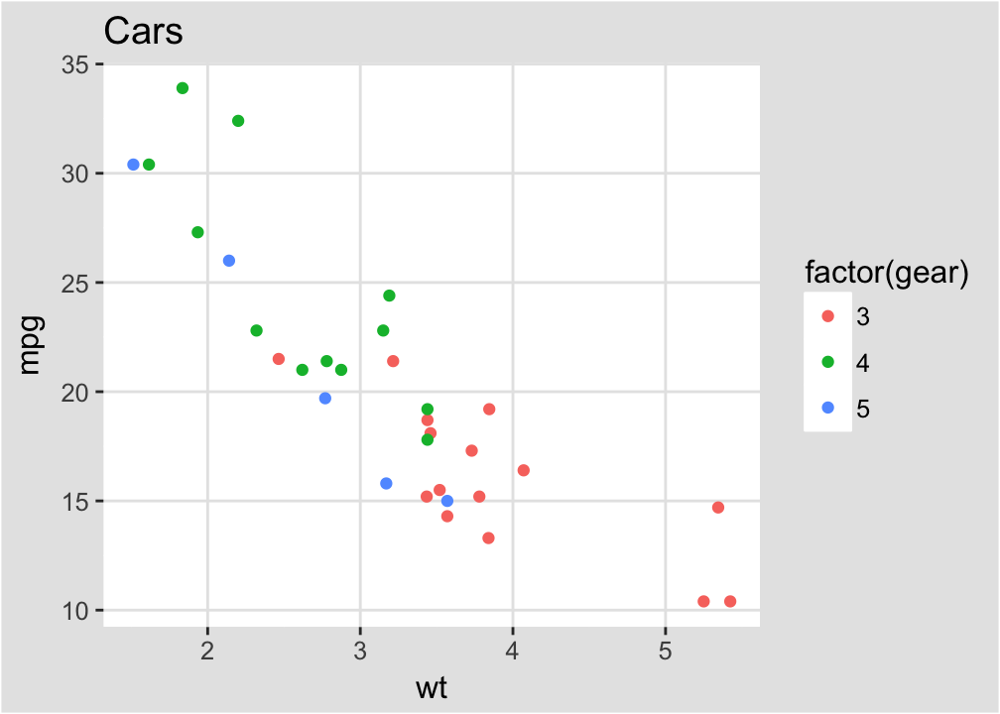
Fivethirtyeight theme
Theme and color palette based on the plots at fivethirtyeight.com.
p2 + geom_smooth(method = "lm", se = FALSE) +
scale_color_fivethirtyeight("cyl") +
theme_fivethirtyeight()
Paul Tol Scales
Color palette based on Paul Tol’s Colour Schemes.
p2 + geom_smooth(method = "lm", se = FALSE) +
scale_color_ptol("cyl") +
theme_minimal()
ggplot(diamonds, aes(x = clarity, fill = cut)) +
geom_bar() +
scale_fill_ptol() +
theme_minimal()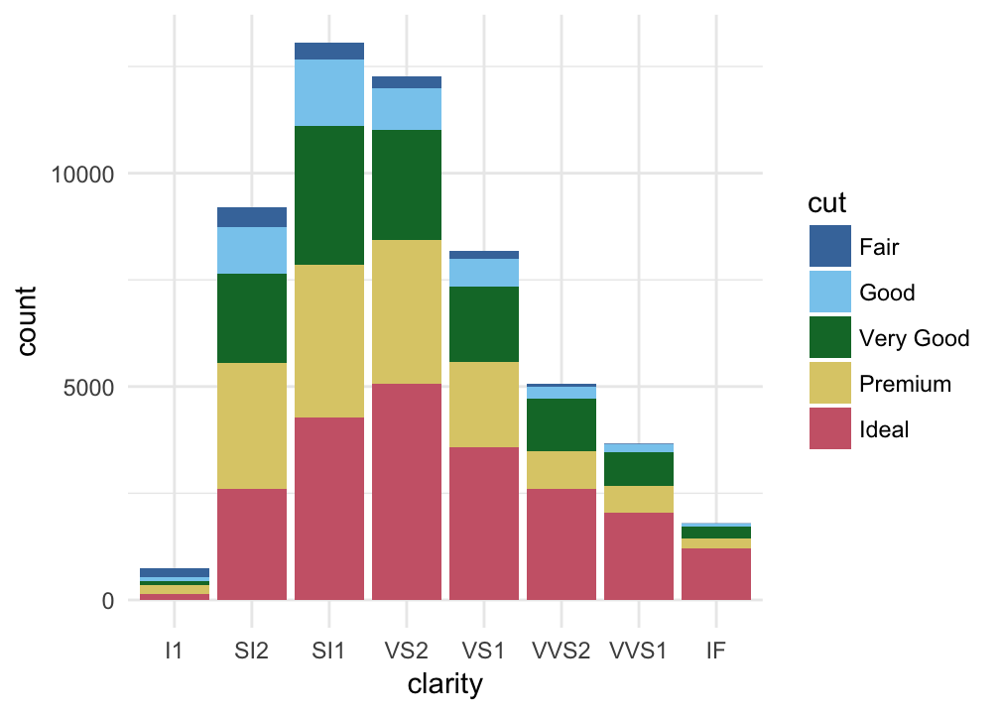
Tableau Scales
Color, fill, and shape scales based on those used in the Tableau software.
p2 + theme_igray() + scale_colour_tableau()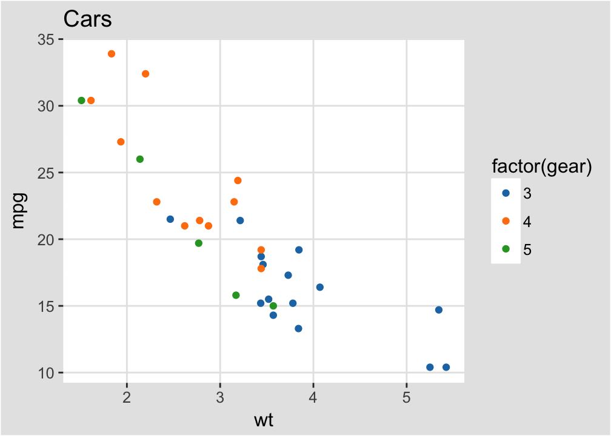
p2 + theme_igray() + scale_colour_tableau("colorblind10")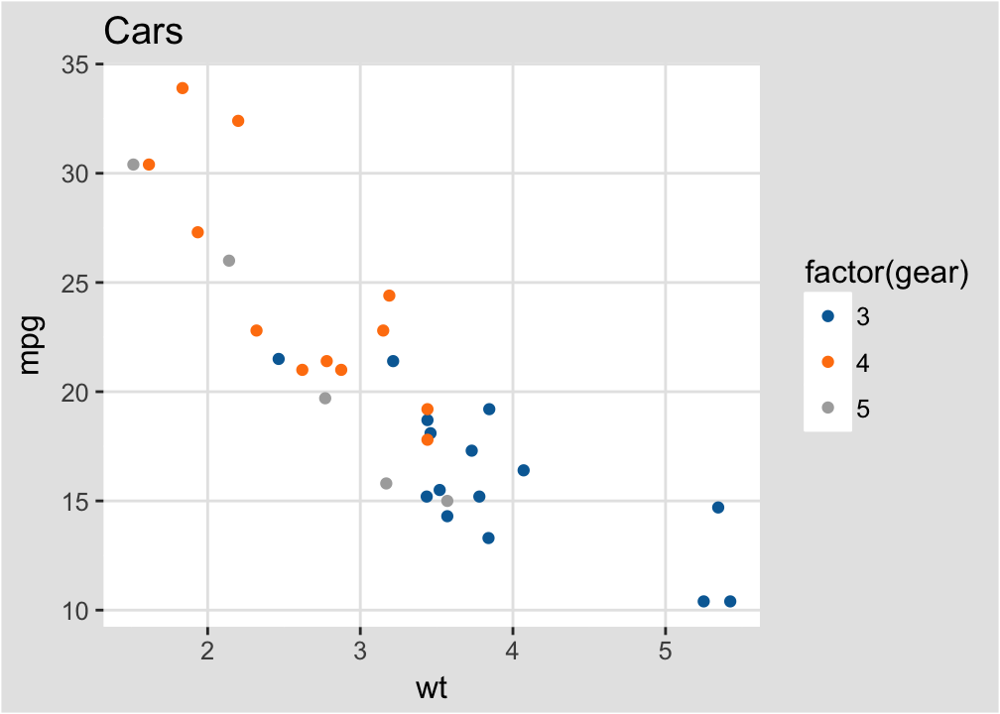
Stephen Few’s Practical Rules for Using Color …
Color palette and theme based on Stephen Few’s “Practical Rules for Using Color in Charts”.
p2 + theme_few() + scale_colour_few()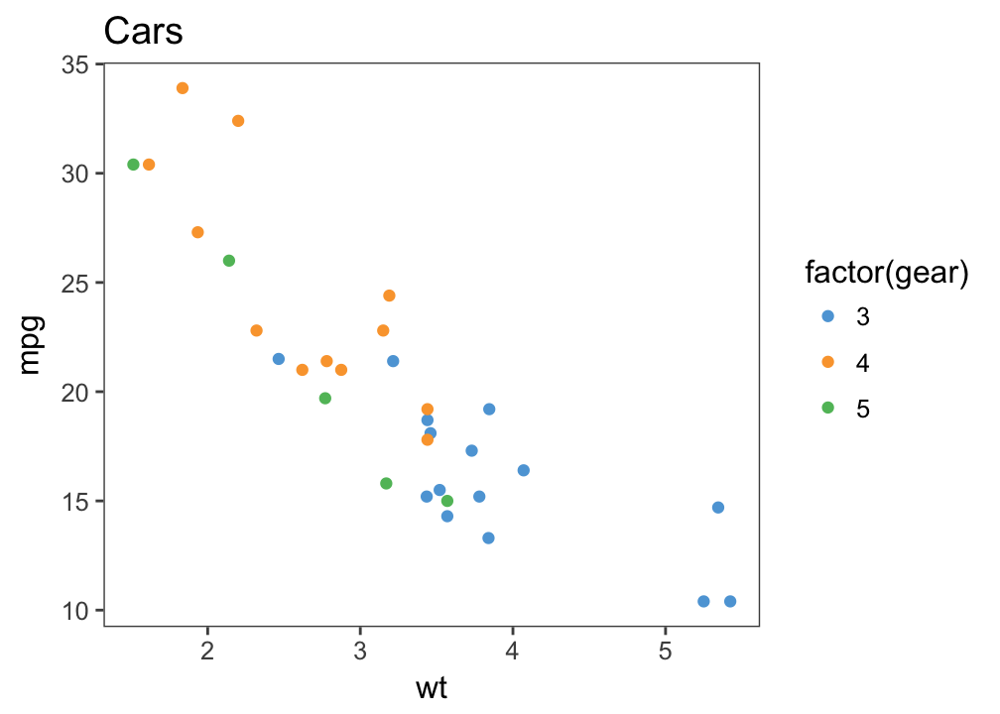
Wall Street Journal
Theme and some color palettes based on plots in the The Wall Street Journal.
p2 + theme_wsj() + scale_colour_wsj("colors6", "")
Base and Par Themes
Theme that resembles the default theme in the base graphics in R.
p2 + theme_base()
Par theme
Theme that uses the current values of base graphics stored in par. Not all par parameters, are supported, and not all are relevant to ggplot2 themes.
par(fg = "blue", bg = "gray", col.lab = "red", font.lab = 3)
p2 + theme_par()
GDocs Theme
Theme and color palettes based on the defaults in Google Docs.
p2 + theme_gdocs() + scale_color_gdocs()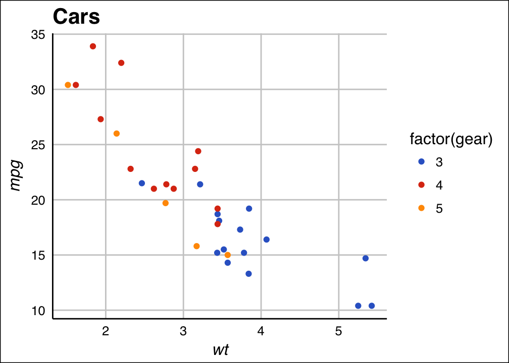
Calc Theme
Theme and color and shape palettes based on the defaults in LibreOffice Calc.
p2 + theme_calc() + scale_color_calc()
Pander Theme
Theme and color palettes based on the pander package.
p2 + theme_pander() + scale_colour_pander()
ggplot(diamonds, aes(x = clarity, fill = cut)) +
geom_bar() +
theme_pander() +
scale_fill_pander()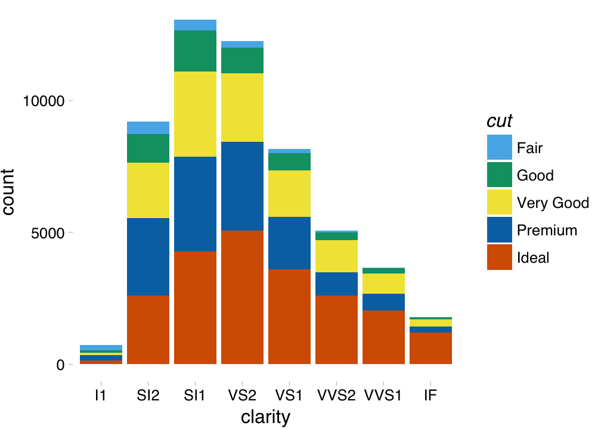
Highcharts theme
A theme that approximates the style of plots in Highcharts JS.
p2 + theme_hc() + scale_colour_hc()
p2 + theme_hc(bgcolor = "darkunica") +
scale_colour_hc("darkunica")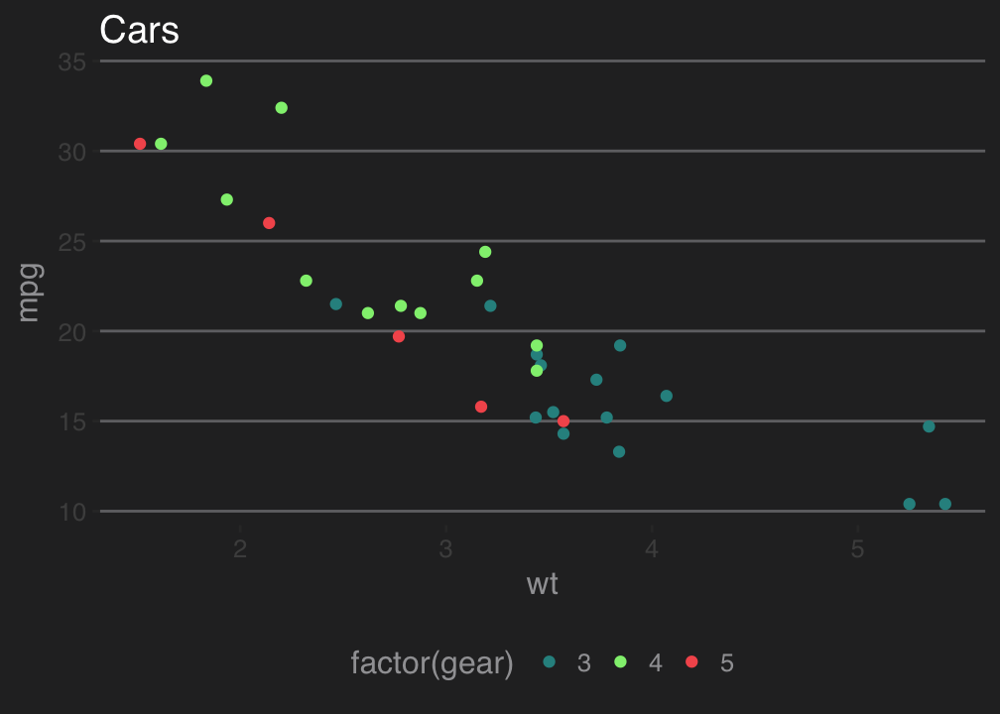
dtemp <- data.frame(months = factor(rep(substr(month.name,1,3), 4), levels = substr(month.name,1,3)),
city = rep(c("Tokyo", "New York", "Berlin", "London"), each = 12),
temp = c(7.0, 6.9, 9.5, 14.5, 18.2, 21.5, 25.2, 26.5, 23.3, 18.3, 13.9, 9.6,
-0.2, 0.8, 5.7, 11.3, 17.0, 22.0, 24.8, 24.1, 20.1, 14.1, 8.6, 2.5,
-0.9, 0.6, 3.5, 8.4, 13.5, 17.0, 18.6, 17.9, 14.3, 9.0, 3.9, 1.0,
3.9, 4.2, 5.7, 8.5, 11.9, 15.2, 17.0, 16.6, 14.2, 10.3, 6.6, 4.8))ggplot(dtemp, aes(x = months, y = temp, group = city, color = city)) +
geom_line() +
geom_point(size = 1.1) +
ggtitle("Monthly Average Temperature") +
theme_hc() +
scale_colour_hc()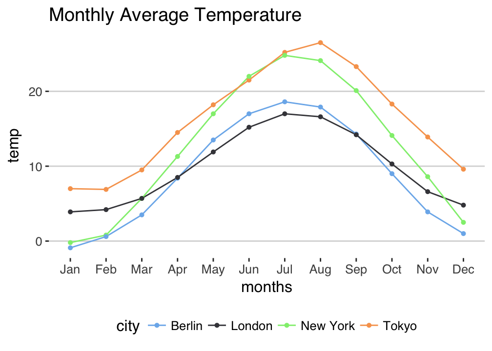
ggplot(dtemp, aes(x = months, y = temp, group = city, color = city)) +
geom_line() +
geom_point(size = 1.1) +
ggtitle("Monthly Average Temperature") +
theme_hc(bgcolor = "darkunica") +
scale_fill_hc("darkunica")
Maps theme
A theme useful for displaying maps.
library("maps")
us <- fortify(map_data("state"), region = "region")
ggplot() +
geom_map(data = us, map = us,
aes(x = long, y = lat, map_id = region, group = group),
fill = "white", color = "black", size = 0.25) +
coord_map("albers", lat0 = 39, lat1 = 45) +
theme_map()## Warning: Ignoring unknown aesthetics: x, y